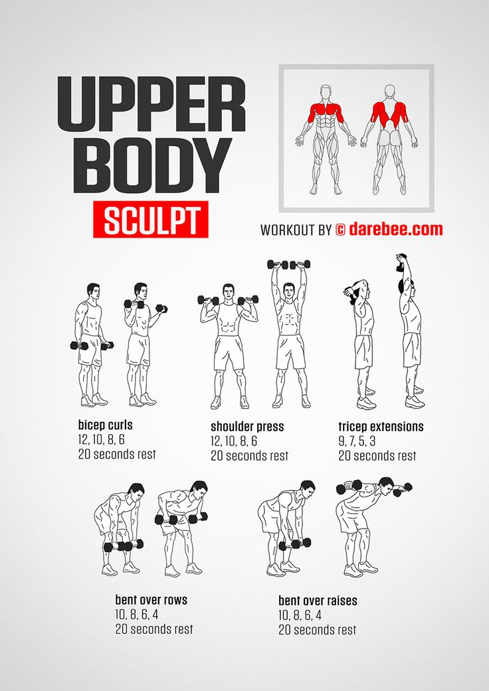

Upper Body A
Senin,

Ringkasan Sesi
- Durasi
- 55 menit
- Jumlah gerakan
- 3 gerakan
- Total volume
- 1.650 kg
Hasil Latihan
| Gerakan | Set | Reps | Beban | Volume |
|---|---|---|---|---|
| Bicep Curls | 3 | 10 | 20 kg | 600 kg |
| Shoulder Press | 3 | 12 | 25 kg | 900 kg |
| Tricep Extensions | 3 | 10 | 5 kg | 150 kg |
Catatan Latihan
Fokus menjaga teknik gerakan dan menyelesaikan semua set.